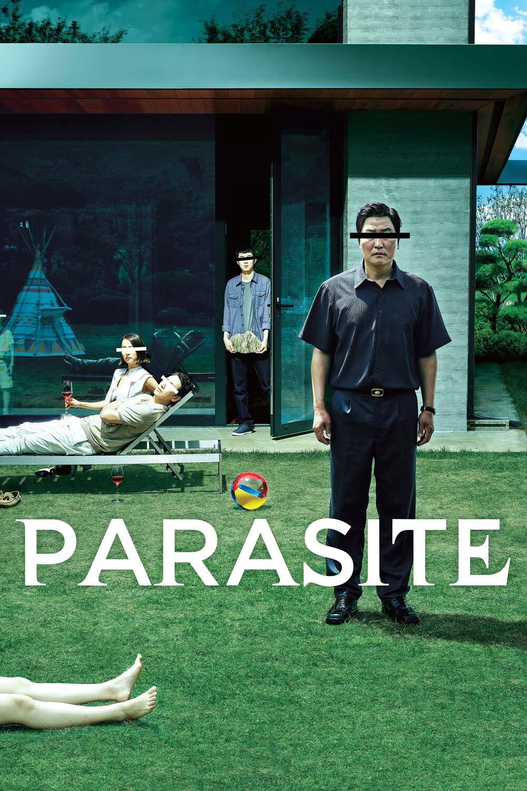

dokjqk
FAVOURITE FILMS



RECENT ACTIVITES


RECENT REVIEWS
My Neighbor Totoro
★★★★
Watched 2024-11-20
Watched it for the first time and it's as good as I've heard. I love how low-key the plot is and how gradual the introduction of the spirits side is, kind of the exact opposite of Spirited Away. It's definitely very grounded and human in its story, and the spirits sort of complement the human issues as opposed to humans being lost in a completely new, spirit world.
Look Back
★★★★★
Watched 2024-11-18
It's gonna sit with me for a very long time. Absolutely beautiful piece of work. It talks about the dedication and motivation behind creating art. Why do people spend hours of their lives perfecting that one skill? Be it drawing, playing music or writing a novel? What motivates and inspires creatives like us? I've read the manga before and this hits just as hard or even harder knowing the story. Something stirred in me deeply early in the film. Also see Fujino running in the rain was amazing.
Howl's Moving Castle
★★★★
Watched 2024-11-15
God what a delight. The characters, the animation, the writing, everything is in tip-top shape here. Probably one of my top 3 favorites from Ghibli
DIARY
-
NOV
My Neighbor Totoro
Look Back
Howl's Moving Castle
-
OCT
The Batman
Gladiator
-
SEP
Fight Club
Spider-Man: Across the Spider Verse
-
AUG
My Neighbor Totoro
Look Back